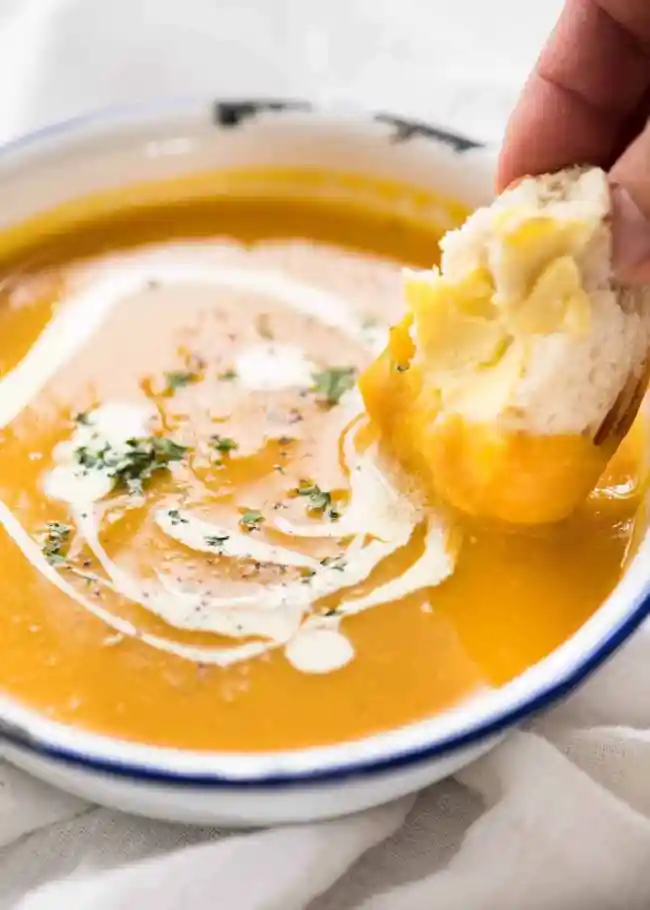
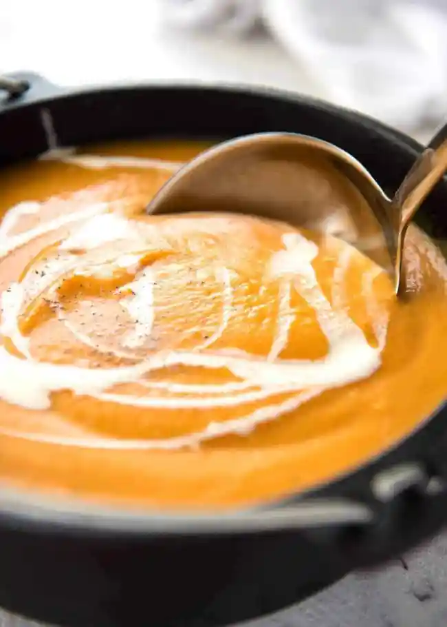

Pumpkin Soup

This is a classic, easy pumpkin soup made with fresh pumpkin that is very fast to make. Thick, creamy and full of flavour, this is THE pumpkin soup recipe you will make now and forever! Don’t forget the hot buttered crusty bread for dunking! (Bonus: pumpkin soup is super healthy with just 189 calories per serving!)
This is a reader-favourite recipe included by popular demand in my debut cookbook “Dinner”!

Ingredients
- 1.2 kg / 2.4 lb pumpkin (any type) OR butternut squash
- 1 onion, sliced
- 2 garlic cloves
- 3 cups (750ml) vegetable or chicken broth/stock
- 1 cup (250 ml) water
- Salt and pepper
Instruction
- Cut the pumpkin into 3cm / 2.25" slices. Cut the skin off and scrape seeds out (video is helpful). Cut into 4cm / 1.5" chunks.
- Place the pumpkin, onion, garlic, broth and water in a pot – liquid won't quite cover all the pumpkin. Bring to a boil, uncovered, then reduce heat and let simmer rapidly until pumpkin is tender (check with butter knife) – about 10 minutes.
- Remove from heat and use a stick blender to blend until smooth (Note 3 for blender).
- Season to taste with salt and pepper, stir through cream (never boil soup after adding cream, cream will split).
- Ladle soup into bowls, drizzle over a bit of cream, sprinkle with pepper and parsley if desired. Serve with crusty bread!